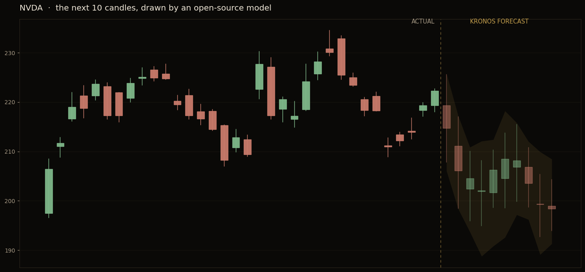

An AI that draws the next candles on your chart.
Kronos is the first open-source foundation model built for candlesticks — trained on K-line data from more than 45 exchanges, MIT licensed, accepted to AAAI 2026. It doesn't forecast a price line like most models. It takes full OHLCV and generates the next candles, wicks and all. You run it on your laptop, then have Claude turn its output into a Pine script that draws those ghost candles ahead of live price on TradingView.
Read this before you trust it. Kronos is a short-horizon model — roughly the next 10 candles — and it is stochastic, so two runs disagree. In my own testing across several tickers it leaned persistently toward mean reversion, calling a fall on instruments that had no business falling. Run it for the visual and the experiment. Do not trade it. If you want a number you can rely on, the honest move is to log its forecasts and score them against what actually happened before you believe a single one.
# 1. run the model locally (CPU is fine)
python forecast.py NVDA
# 2. hand the output to Claude:
# "turn these predicted OHLC values into a Pine v6 indicator
# that draws them as candles ahead of the last bar,
# using xloc.bar_time with future timestamps"
# 3. paste the generated script into the Pine editor
Never miss an earnings release again.
An agent that watches the earnings calendar, pings you before the bell when something you follow is due, then comes back after the release with the actual numbers against estimates. It runs on a free data tier and a webhook. No terminal subscription, no alerts you forget to set.
The part nobody warns you about: calendars lie. Two free sources will disagree about which companies report on a given day, and plenty of rows arrive with no session attached — you can't tell whether it's before the open or after the close. Reconcile two calendars rather than trusting one, treat a missing time as unknown instead of guessing, and match a result to its expected release inside a window of a day or two rather than demanding an exact date. Get those three things right and the agent stops missing releases.
Open the guide →Read politicians' trades from their own filings.
US officials have to disclose their trades, and those disclosures are public, free and machine-readable enough for an AI to parse. Claude fetches the filings, pulls each transaction into a table, and plots the buys and sells onto a price chart so you can see exactly where someone bought. No paid aggregator — go to the primary source, because the free middlemen break constantly.
Know what you're looking at. These are periodic transaction reports, filed with a legal lag that can run to 45 days after the trade. By the time you read one, the price has moved. Amounts are disclosed in broad bands, not exact dollars. This is a research and storytelling tool — a way to study what disclosure actually reveals — not a signal to copy.
A gauntlet that kills bad strategies.
Anyone can find a strategy that looks good on one chart. The hard part is proving it isn't luck. So don't test a strategy — build a gauntlet and make every strategy earn its way through. Claude writes the variants, the gauntlet kills the ones that don't survive, and almost all of them don't. That's the point: the value is in the rejection rate, not in finding a winner.
- Full-window backtest. Real fees, real spreads, years of data. Most candidates die here — and a strategy that can't clear this bar was never a strategy.
- Walk-forward. Split the history in half. Tune on the first half, test on the second, untouched. Anything that only works on the half you tuned on is curve-fitted, and this is what catches it.
- Parameter jitter. Nudge every setting a few percent in both directions and re-run. A real edge sits on a plateau and survives the nudge. A fluke sits on a knife-edge and collapses. This gate is the most useful one and almost nobody runs it.
- Paper trading. Live data, fake money, weeks not days. Only after all four does anything deserve a conversation about real capital.
Nine out of ten died, and the biggest cull came after the backtest — at the two gates most people never run. That ratio is the product. A process that approves everything you feed it is not testing anything.
The most useful result I ever got from this was a failure. An early strategy came back with a 67% win rate — and still lost money, because the losses were bigger than the wins. A high win rate is not an edge. Expectancy is. The gauntlet told me that in about three seconds, which is three seconds better than finding out with real money.
# free, open-source, runs locally -- freqtrade
freqtrade backtesting --strategy MyIdea --timerange 20240101-20250101
freqtrade backtesting --strategy MyIdea --timerange 20250101-20260101 # walk-forward: unseen half
freqtrade hyperopt --strategy MyIdea --spaces roi stoploss
freqtrade trade --strategy MyIdea --dry-run # paper onlyPaper trade first. Always. A backtest is a hypothesis, not a result — it has perfect information about the past and none about the future. Run any strategy on live data with fake money for weeks before you consider risking a cent, and assume the live version will perform worse than the test. Most do. Nothing on this page is financial advice.
A trading desk that answers out loud.
The last build is the one people remember. Not one agent — a desk: specialists for news, macro, risk and technicals, coordinated by a manager agent that reports back to you in a voice, out loud. Ask it what happened overnight and it tells you, in a sentence, like a person. Everything else on this list feeds it.
Open the guide →Do them in any order this time — these five stand alone. But finish one. A working agent on Sunday night beats four half-built ones and a browser full of tabs. When yours runs, tag @cloud9.markets — I repost the best builds.